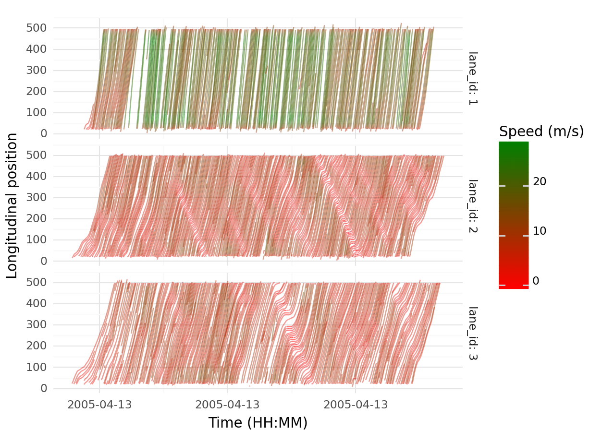

library(dplyr)
library(ggplot2)
library(janitor)
library(arrow)Transforming data to make it fit for analysis
visualization
dplyr
pandas
siuba
data-transformation
mutate
filter
Learn to use dplyr, pandas and siuba to filter rows & create and change columns
import pandas as pd
from siuba.dply.vector import n, row_number, last
from siuba import *
from plotnine import *
import janitorC:\Users\umair\ANACON~1\envs\homl3\lib\site-packages\lazy_loader\__init__.py:185: RuntimeWarning: subpackages can technically be lazily loaded, but it causes the package to be eagerly loaded even if it is already lazily loaded.So, you probably shouldn't use subpackages with this lazy feature.
C:\Users\umair\ANACON~1\envs\homl3\lib\site-packages\lazy_loader\__init__.py:185: RuntimeWarning: subpackages can technically be lazily loaded, but it causes the package to be eagerly loaded even if it is already lazily loaded.So, you probably shouldn't use subpackages with this lazy feature.using ParquetFiles, DataFrames, Tidierdf <- arrow::read_parquet("data/df_raw.parquet")
df <- janitor::clean_names(df)
knitr::kable(head(df))| vehicle_id | frame_id | total_frames | global_time | local_x | local_y | global_x | global_y | v_length | v_width | v_class | v_vel | v_acc | lane_id | preceding | following | space_headway | time_headway |
|---|---|---|---|---|---|---|---|---|---|---|---|---|---|---|---|---|---|
| 1 | 12 | 884 | 1113433136100 | 16.884 | 52.74782 | 6042842 | 2133118 | 14.3 | 6.4 | 2 | 6.947704 | 2.188889 | 2 | 0 | 0 | 0 | 0 |
| 1 | 13 | 884 | 1113433136200 | 16.938 | 53.45500 | 6042842 | 2133119 | 14.3 | 6.4 | 2 | 7.195818 | 3.152102 | 2 | 0 | 0 | 0 | 0 |
| 1 | 14 | 884 | 1113433136300 | 16.991 | 54.19089 | 6042842 | 2133120 | 14.3 | 6.4 | 2 | 7.522104 | 3.871618 | 2 | 0 | 0 | 0 | 0 |
| 1 | 15 | 884 | 1113433136400 | 17.045 | 54.96182 | 6042842 | 2133121 | 14.3 | 6.4 | 2 | 7.896343 | 4.184370 | 2 | 0 | 0 | 0 | 0 |
| 1 | 16 | 884 | 1113433136500 | 17.098 | 55.77100 | 6042842 | 2133123 | 14.3 | 6.4 | 2 | 8.287402 | 3.906572 | 2 | 0 | 0 | 0 | 0 |
| 1 | 17 | 884 | 1113433136600 | 17.151 | 56.61935 | 6042842 | 2133124 | 14.3 | 6.4 | 2 | 8.679462 | 3.880959 | 2 | 0 | 0 | 0 | 0 |
df = pd.read_parquet("data/df_raw.parquet")
df.columnsIndex(['Vehicle_ID', 'Frame_ID', 'Total_Frames', 'Global_Time', 'Local_X',
'Local_Y', 'Global_X', 'Global_Y', 'v_Length', 'v_Width', 'v_Class',
'v_Vel', 'v_Acc', 'Lane_ID', 'Preceding', 'Following', 'Space_Headway',
'Time_Headway'],
dtype='object')df = df.clean_names()
df.columnsIndex(['vehicle_id', 'frame_id', 'total_frames', 'global_time', 'local_x',
'local_y', 'global_x', 'global_y', 'v_length', 'v_width', 'v_class',
'v_vel', 'v_acc', 'lane_id', 'preceding', 'following', 'space_headway',
'time_headway'],
dtype='object')df = DataFrame(load("data/df_raw.parquet"))1048575×18 DataFrame
Row │ Vehicle_ID Frame_ID Total_Frames Global_Time Local_X Local_Y ⋯
│ Int64 Int64 Int64 Int64 Float64 Float64 ⋯
─────────┼──────────────────────────────────────────────────────────────────────
1 │ 1 12 884 1113433136100 16.884 52.74 ⋯
2 │ 1 13 884 1113433136200 16.938 53.45
3 │ 1 14 884 1113433136300 16.991 54.19
4 │ 1 15 884 1113433136400 17.045 54.96
5 │ 1 16 884 1113433136500 17.098 55.77 ⋯
6 │ 1 17 884 1113433136600 17.151 56.61
7 │ 1 18 884 1113433136700 17.204 57.50
8 │ 1 19 884 1113433136800 17.257 58.43
⋮ │ ⋮ ⋮ ⋮ ⋮ ⋮ ⋮ ⋱
1048569 │ 2911 8586 731 1113433993500 53.639 1510.93 ⋯
1048570 │ 2911 8587 731 1113433993600 53.666 1513.01
1048571 │ 2911 8588 731 1113433993700 53.693 1515.0
1048572 │ 2911 8589 731 1113433993800 53.719 1516.88
1048573 │ 2911 8590 731 1113433993900 53.746 1518.68 ⋯
1048574 │ 2911 8591 731 1113433994000 53.772 1520.39
1048575 │ 2911 8592 731 1113433994100 53.799 1522.03
13 columns and 1048560 rows omitted
df = @chain df begin
@clean_names
end1048575×18 DataFrame
Row │ vehicle_i_d frame_i_d total_frames global_time local_x local ⋯
│ Int64 Int64 Int64 Int64 Float64 Float ⋯
─────────┼──────────────────────────────────────────────────────────────────────
1 │ 1 12 884 1113433136100 16.884 52. ⋯
2 │ 1 13 884 1113433136200 16.938 53.
3 │ 1 14 884 1113433136300 16.991 54.
4 │ 1 15 884 1113433136400 17.045 54.
5 │ 1 16 884 1113433136500 17.098 55. ⋯
6 │ 1 17 884 1113433136600 17.151 56.
7 │ 1 18 884 1113433136700 17.204 57.
8 │ 1 19 884 1113433136800 17.257 58.
⋮ │ ⋮ ⋮ ⋮ ⋮ ⋮ ⋮ ⋱
1048569 │ 2911 8586 731 1113433993500 53.639 1510. ⋯
1048570 │ 2911 8587 731 1113433993600 53.666 1513.
1048571 │ 2911 8588 731 1113433993700 53.693 1515.
1048572 │ 2911 8589 731 1113433993800 53.719 1516.
1048573 │ 2911 8590 731 1113433993900 53.746 1518. ⋯
1048574 │ 2911 8591 731 1113433994000 53.772 1520.
1048575 │ 2911 8592 731 1113433994100 53.799 1522.
13 columns and 1048560 rows omitted
names(df)18-element Vector{String}:
"vehicle_i_d"
"frame_i_d"
"total_frames"
"global_time"
"local_x"
"local_y"
"global_x"
"global_y"
"v_length"
"v_width"
"v_class"
"v_vel"
"v_acc"
"lane_i_d"
"preceding"
"following"
"space_headway"
"time_headway"
df = @chain df begin
@rename(vehicle_id = vehicle_i_d,
frame_id = frame_i_d,
lane_id = lane_i_d)
end1048575×18 DataFrame
Row │ vehicle_id frame_id total_frames global_time local_x local_y ⋯
│ Int64 Int64 Int64 Int64 Float64 Float64 ⋯
─────────┼──────────────────────────────────────────────────────────────────────
1 │ 1 12 884 1113433136100 16.884 52.74 ⋯
2 │ 1 13 884 1113433136200 16.938 53.45
3 │ 1 14 884 1113433136300 16.991 54.19
4 │ 1 15 884 1113433136400 17.045 54.96
5 │ 1 16 884 1113433136500 17.098 55.77 ⋯
6 │ 1 17 884 1113433136600 17.151 56.61
7 │ 1 18 884 1113433136700 17.204 57.50
8 │ 1 19 884 1113433136800 17.257 58.43
⋮ │ ⋮ ⋮ ⋮ ⋮ ⋮ ⋮ ⋱
1048569 │ 2911 8586 731 1113433993500 53.639 1510.93 ⋯
1048570 │ 2911 8587 731 1113433993600 53.666 1513.01
1048571 │ 2911 8588 731 1113433993700 53.693 1515.0
1048572 │ 2911 8589 731 1113433993800 53.719 1516.88
1048573 │ 2911 8590 731 1113433993900 53.746 1518.68 ⋯
1048574 │ 2911 8591 731 1113433994000 53.772 1520.39
1048575 │ 2911 8592 731 1113433994100 53.799 1522.03
13 columns and 1048560 rows omitteddf <- df |>
dplyr::group_by(frame_id) |> # grouping by frame id
dplyr::mutate(preceding_local_y = local_y[match(preceding, vehicle_id)],
preceding_length = v_length[match(preceding, vehicle_id)],
preceding_width = v_width[match(preceding, vehicle_id)],
preceding_class= v_class[match(preceding, vehicle_id)],
preceding_vel = v_vel[match(preceding, vehicle_id)],
preceding_acc = v_acc[match(preceding, vehicle_id)]) |>
dplyr::ungroup()df = df.merge(
df.loc[:, ['frame_id', 'vehicle_id', 'local_y', 'v_length',
'v_width', 'v_class', 'v_vel', 'v_acc']] ,
left_on = ['frame_id', 'preceding'],
right_on = ['frame_id', 'vehicle_id'], how = 'left',
suffixes=['', '_preceding']
)
df = df.drop(['vehicle_id_preceding'], axis = 'columns')
df.columnsIndex(['vehicle_id', 'frame_id', 'total_frames', 'global_time', 'local_x',
'local_y', 'global_x', 'global_y', 'v_length', 'v_width', 'v_class',
'v_vel', 'v_acc', 'lane_id', 'preceding', 'following', 'space_headway',
'time_headway', 'local_y_preceding', 'v_length_preceding',
'v_width_preceding', 'v_class_preceding', 'v_vel_preceding',
'v_acc_preceding'],
dtype='object')Rename the columns for preceding vehicles to match the column names with R:
df = (
df
>> rename(preceding_local_y = _.local_y_preceding,
preceding_v_length = _.v_length_preceding,
preceding_v_width = _.v_width_preceding,
preceding_v_class = _.v_class_preceding,
preceding_v_vel = _.v_vel_preceding,
preceding_v_acc = _.v_acc_preceding)
)
df.columnsIndex(['vehicle_id', 'frame_id', 'total_frames', 'global_time', 'local_x',
'local_y', 'global_x', 'global_y', 'v_length', 'v_width', 'v_class',
'v_vel', 'v_acc', 'lane_id', 'preceding', 'following', 'space_headway',
'time_headway', 'preceding_local_y', 'preceding_v_length',
'preceding_v_width', 'preceding_v_class', 'preceding_v_vel',
'preceding_v_acc'],
dtype='object')df = leftjoin(
df,
df[:, [:frame_id, :vehicle_id, :local_y, :v_length, :v_width, :v_class, :v_vel, :v_acc]],
on = [:frame_id => :frame_id, :preceding => :vehicle_id],
makeunique = true,
renamecols = "" => "_preceding"
)1048575×24 DataFrame
Row │ vehicle_id frame_id total_frames global_time local_x local_y ⋯
│ Int64 Int64 Int64 Int64 Float64 Float64 ⋯
─────────┼──────────────────────────────────────────────────────────────────────
1 │ 11 57 864 1113433140600 17.924 68.918 ⋯
2 │ 11 58 864 1113433140700 17.827 69.534
3 │ 11 59 864 1113433140800 17.73 70.158
4 │ 11 60 864 1113433140900 17.632 70.792
5 │ 11 61 864 1113433141000 17.533 71.434 ⋯
6 │ 11 62 864 1113433141100 17.433 72.083
7 │ 11 63 864 1113433141200 17.333 72.737
8 │ 11 64 864 1113433141300 17.233 73.398
⋮ │ ⋮ ⋮ ⋮ ⋮ ⋮ ⋮ ⋱
1048569 │ 2911 8381 731 1113433973000 61.556 928.234 ⋯
1048570 │ 2911 8382 731 1113433973100 60.848 931.051
1048571 │ 2911 8383 731 1113433973200 60.721 933.884
1048572 │ 2911 8384 731 1113433973300 60.667 936.733
1048573 │ 2911 8385 731 1113433973400 60.779 939.596 ⋯
1048574 │ 2911 8386 731 1113433973500 60.97 942.472
1048575 │ 2911 8387 731 1113433973600 60.618 945.36
19 columns and 1048560 rows omitted
names(df)24-element Vector{String}:
"vehicle_id"
"frame_id"
"total_frames"
"global_time"
"local_x"
"local_y"
"global_x"
"global_y"
"v_length"
"v_width"
⋮
"following"
"space_headway"
"time_headway"
"local_y_preceding"
"v_length_preceding"
"v_width_preceding"
"v_class_preceding"
"v_vel_preceding"
"v_acc_preceding"Rename the columns for preceding vehicles to match the column names with R:
df = @chain df begin
@rename(preceding_local_y = local_y_preceding,
preceding_v_length = v_length_preceding,
preceding_v_width = v_width_preceding,
preceding_v_class = v_class_preceding,
preceding_v_vel = v_vel_preceding,
preceding_v_acc = v_acc_preceding)
end1048575×24 DataFrame
Row │ vehicle_id frame_id total_frames global_time local_x local_y ⋯
│ Int64 Int64 Int64 Int64 Float64 Float64 ⋯
─────────┼──────────────────────────────────────────────────────────────────────
1 │ 11 57 864 1113433140600 17.924 68.918 ⋯
2 │ 11 58 864 1113433140700 17.827 69.534
3 │ 11 59 864 1113433140800 17.73 70.158
4 │ 11 60 864 1113433140900 17.632 70.792
5 │ 11 61 864 1113433141000 17.533 71.434 ⋯
6 │ 11 62 864 1113433141100 17.433 72.083
7 │ 11 63 864 1113433141200 17.333 72.737
8 │ 11 64 864 1113433141300 17.233 73.398
⋮ │ ⋮ ⋮ ⋮ ⋮ ⋮ ⋮ ⋱
1048569 │ 2911 8381 731 1113433973000 61.556 928.234 ⋯
1048570 │ 2911 8382 731 1113433973100 60.848 931.051
1048571 │ 2911 8383 731 1113433973200 60.721 933.884
1048572 │ 2911 8384 731 1113433973300 60.667 936.733
1048573 │ 2911 8385 731 1113433973400 60.779 939.596 ⋯
1048574 │ 2911 8386 731 1113433973500 60.97 942.472
1048575 │ 2911 8387 731 1113433973600 60.618 945.36
19 columns and 1048560 rows omitted
names(df)24-element Vector{String}:
"vehicle_id"
"frame_id"
"total_frames"
"global_time"
"local_x"
"local_y"
"global_x"
"global_y"
"v_length"
"v_width"
⋮
"following"
"space_headway"
"time_headway"
"preceding_local_y"
"preceding_v_length"
"preceding_v_width"
"preceding_v_class"
"preceding_v_vel"
"preceding_v_acc"df <- df |>
select(-c(total_frames, starts_with("global"), following), global_time) |> # Keeping the desired columns only
mutate(across(
.cols = c(starts_with("local"), starts_with("v_"), space_headway, starts_with("preceding"), -preceding, -preceding_class, -v_class),
.fns = ~ round(.x * .3048, 2)
)) |> # Convert to metric units
mutate(across(
.cols = c(vehicle_id, v_class, lane_id, preceding, preceding_class),
.fns = ~ as.factor(.x)
)) # Convert a few columns to factor typedf = (
df
>> select(-_[_.total_frames, _.startswith('global'), _.following],
_.global_time) # Keeping the desired columns only
)
### converting to metric units
cols_to_convert_to_metric = ['local_x', 'local_y', 'v_length', 'v_width',
'v_vel', 'v_acc', 'space_headway', 'preceding_local_y',
'preceding_v_length', 'preceding_v_width', 'preceding_v_vel',
'preceding_v_acc']
df[cols_to_convert_to_metric] = df[cols_to_convert_to_metric].apply(lambda x: x * .3048).round(2)
## change the data type to categorical
cols_to_convert_to_categorical = ['vehicle_id', 'v_class', 'lane_id',
'preceding', 'preceding_v_class']
for col in cols_to_convert_to_categorical:
df[col] = df[col].astype('str',copy=False)df <- df |>
mutate(actual_time = as.POSIXct(global_time/1000, origin = "1970-01-01",
tz="America/Los_Angeles")) |>
select(-global_time)df['actual_time'] = pd.to_datetime(df['global_time'] / 1000,
unit='s', origin='1970-01-01', utc=True)
df['actual_time'] = df['actual_time'].dt.tz_convert('America/Los_Angeles')
df = df.drop(['global_time'], axis = 'columns')
print(df.columns)Index(['vehicle_id', 'frame_id', 'local_x', 'local_y', 'v_length', 'v_width',
'v_class', 'v_vel', 'v_acc', 'lane_id', 'preceding', 'space_headway',
'time_headway', 'preceding_local_y', 'preceding_v_length',
'preceding_v_width', 'preceding_v_class', 'preceding_v_vel',
'preceding_v_acc', 'actual_time'],
dtype='object')## Time space diagram
# ggplot(data = df |>
# filter(lane_id %in% c(1,2,3))) +
# geom_path(aes(x = actual_time,
# y = local_y,
# color = v_vel,
# group = vehicle_id), alpha = 0.5) +
# scale_color_gradient(low = "red", high = "green") +
# facet_grid(lane_id ~ ., labeller = "label_both") +
# labs(x = "Time (HH:MM)",
# y = "Longitudinal position",
# color = "Speed (m/s)") +
# theme_minimal()## Time space diagram
df_123 = (
df
>> filter(_.lane_id.isin(["1", "2", "3"]))
)C:\Users\umair\ANACON~1\envs\homl3\lib\site-packages\pandas\core\algorithms.py:522: DeprecationWarning: np.find_common_type is deprecated. Please use `np.result_type` or `np.promote_types`.
See https://numpy.org/devdocs/release/1.25.0-notes.html and the docs for more information. (Deprecated NumPy 1.25)(
ggplot(data = df_123) +
geom_path(aes(x = 'actual_time',
y = 'local_y',
color = 'v_vel',
group = 'vehicle_id'), alpha = 0.5) +
scale_color_gradient(low = "red", high = "green") +
facet_grid('lane_id ~ .', labeller = "label_both") +
labs(x = "Time (HH:MM)",
y = "Longitudinal position",
color = "Speed (m/s)") +
theme_minimal()
)<Figure Size: (640 x 480)>